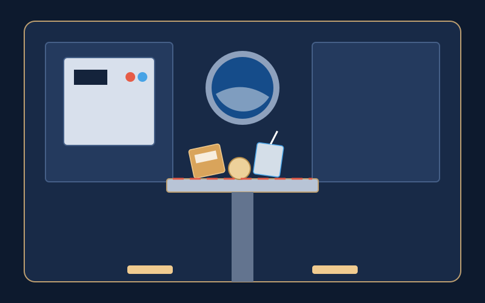

Wing IV • Exhibit 15 • Orbital Habitat & Laboratory
International Space Station: Life in Microgravity
Tour the pressurized modules 400 kilometers above Earth to discover room-by-room how astronauts eat, sleep, and conduct breakthrough science while orbiting at 27,600 km/h.
Room-by-Room Station Tour
Select an Orbital Module

Pressurized Living & Research Quarters
Station Module Directory
24-Hour Orbital Schedule (UTC)
A Day in the Life of Crew
Check off each daily orbital milestone as you explore how astronauts balance science, exercise, and rest. Your progress saves automatically.
Microgravity Engineering
How Zero-G Changes Everyday Life
Regular bread produces crumbs that float into ventilation filters and astronauts' eyes. Crews use soft tortillas, Velcro food trays, and sealed liquid pouches with one-way valves.
Without gravity, warm exhaled carbon dioxide does not rise away from a sleeping astronaut's face. Continuous airflow fans inside each Harmony sleep pod prevent dangerous CO₂ pockets.
With no buoyancy-driven convection or sedimentation, flames burn as quiet blue spheres and protein crystals grow larger and more uniform—advancing medicine and materials science on Earth.
Astronauts lose up to 1–2% bone density per month without weight-bearing loads. Vacuum cylinders on the ARED machine and harnessed treadmills simulate gravity during daily workouts.
Environmental Control & Life Support (ECLSS)
Orbital Mission & Resource Calculator
Enter crew size and expedition length to compute orbits completed, sunrises witnessed, and water saved by the ISS closed-loop recycling system (98% recovery).
2,790
Earth Orbits & Sunrises
119.2M km
Distance Traveled
3,087 L
Water Recycled (98%)
1,058 kg
Oxygen & 2,268 kg Food
Destiny & Columbus Research Desk
Propose a Microgravity Experiment
Submit a student microgravity investigation for one of the ISS research racks. All fields validate live before logging.